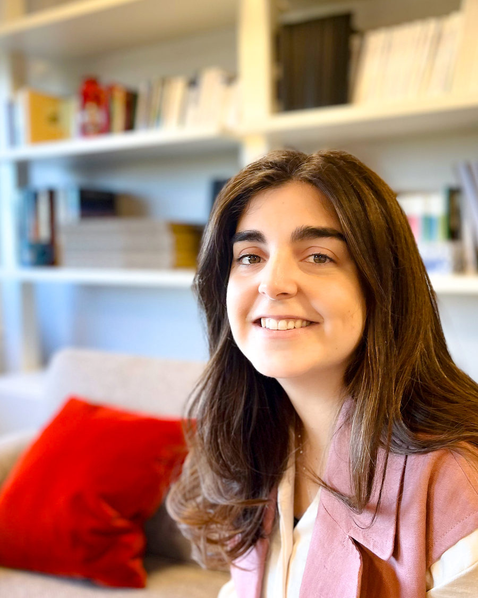

Terapia individual
60 €
55 minutos- Ansiedad, estado de ánimo, autoestima
- Duelos y momentos de cambio
- Relaciones y vínculos
Soy psicóloga sanitaria y terapeuta familiar sistémica. Te acompaño, a ti, a tu pareja o a tu familia, en un espacio de confianza en el centro de Madrid o por videollamada.

Un camino en cinco momentos. No siempre son lineales.
Nombrar lo que ocurre y entender qué te ha traído hasta aquí.
Identificar patrones, emociones y vínculos que se repiten.
Probar pequeños cambios y herramientas en el día a día.
Aceptar las recaídas como parte normal del proceso.
Ver el conjunto: lo aprendido y hacia dónde quieres ir.
Me interesa comprender a las personas desde sus vínculos: cómo nos influyen la familia, la pareja y las historias que heredamos, y cómo podemos cambiar la forma de relacionarnos.
Mi formación es en psicología sanitaria y terapia familiar sistémica. Trabajo con un enfoque cercano y práctico, sin juicios y a tu ritmo.
Presencial en Madrid centro o por videollamada, mismo precio.
Cuéntame brevemente qué te preocupa. Te respondo para fijar día y hora.
En la primera sesión escucho tu situación y vemos si podemos trabajar juntos.
Definimos objetivos y la frecuencia de las sesiones, que puedes cambiar cuando quieras.
Depende de cada caso. Lo hablamos en la primera sesión y lo revisamos juntos de forma periódica.
Sí en lo esencial. Solo necesitas un lugar tranquilo, buena conexión y privacidad.
No siempre. Podemos empezar con quien quiera venir y sumar al resto más adelante.
Sí. Lo que se habla en consulta está protegido por el secreto profesional.
Sí, avisando con antelación.
Escríbeme o llama al 644 08 35 02.